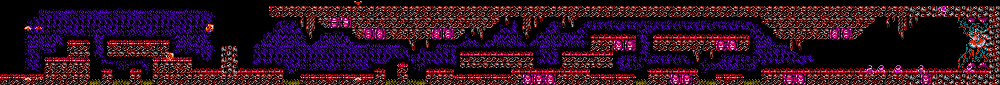
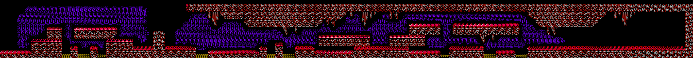
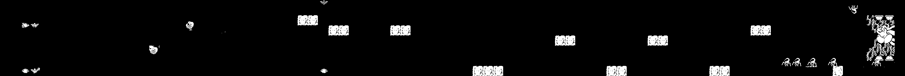

Desplazarse horizontalmente para revisar el mapa completo. Los archivos conservan su resolución original; no se han escalado. La máscara final marca los píxeles cambiados.
La limpieza final también retira B/M, orbes, símbolo superior y pequeños residuos de color. Resolución y colisiones conservadas.


